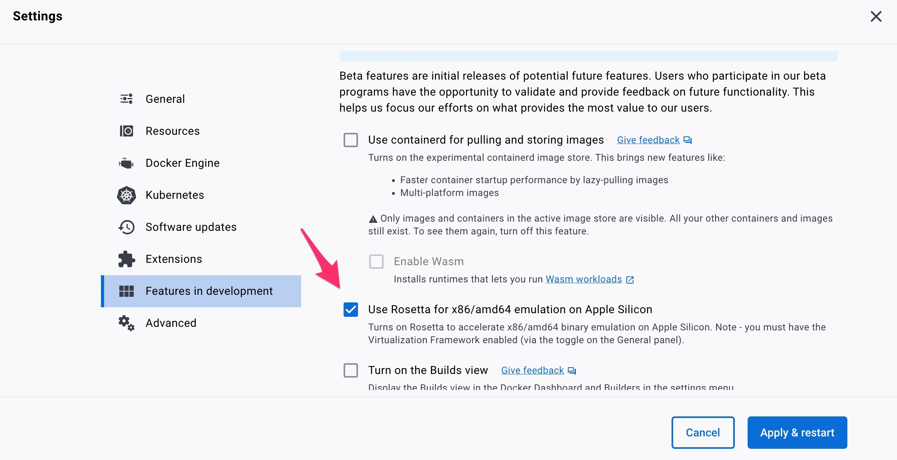

Documentation / Docker
Docker
- Containers
- Build
- Running using Docker
- Running on Mac MX ARM
- More about volumes
- Update (download a newer sitespeed.io)
- Tags and version
- Synchronise docker machines time with host
- Setting time zone
- Change connectivity
- Increase memory
- Access localhost
- Access host in your local network
- Extra start script
- Troubleshooting
- Security
Containers #
Docker makes it easier to run sitespeed.io because you don’t need to install every dependency needed for recording and analysing the browser screen. It’s also easy to update your container to a new sitespeed.io version by changing the Docker tag. The drawback using Docker is that it will add some overhead, the container is Linux only (browsers are Linux version).
We publich containers for AMD and ARM. The AMD containers contains the latest Chrome/Firefox/Edge. The ARM container are behind and use latest Chrome/Firefox that was published for ARM.
We have a four ready made containers:
- One slim container that contains only Firefox. You run Firefox headless. Use the container
sitespeedio/sitespeed.io:38.6.0-slim. The container do not have FFMpeg and Imagemagick so you can not get any Visual Metrics using this container. - One with Chrome, Firefox and Edge. It also contains FFMpeg and Imagemagick, so we can record a video and get metrics like Speed Index using VisualMetrics. This is the default container and use it with
sitespeedio/sitespeed.io:38.6.0. If you use the arm64 version of the container, that container will have Firefox and Chromium installed. - One container that is based in the default container and includes the Google Page Speed Insights and Lighthouse plugin. Use it with
sitespeedio/sitespeed.io:38.6.0-plus1.
Structure #
The Docker structure in the default container looks like this:
NodeJS with Ubuntu 18 -> VisualMetrics dependencies -> Firefox/Chrome/xvfb -> sitespeed.io
The first container installs NodeJS (latest LTS) on Ubuntu 18. The next one adds the dependencies (FFMpeg, ImageMagick and some Python libraries) needed to run VisualMetrics. We then install specific version of Firefox, Chrome and lastly xvfb. Then in last step, we add sitespeed.io and tag it to the sitespeed.io version number.
The slim container is based on Debian Buster slim.
We lock down the browsers to specific versions for maximum compatibility and stability with sitespeed.io’s current feature set; upgrading once we verify browser compatibility.
Build #
The containers are built in the release step in GitHub actions.
If you need to build it yourself, you need to clone the repository and build:
git clone https://github.com/sitespeedio/sitespeed.io.git
cd sitespeed.io
docker build --load -t sitespeedio/sitespeed.io .
Running using Docker #
The simplest way to run using Chrome:
docker run --rm -v "$(pwd):/sitespeed.io" sitespeedio/sitespeed.io:38.6.0 -b chrome https://www.sitespeed.io/
In the real world you should always specify the exact version (tag) of the Docker container to make sure you use the same version for every run. If you use the latest tag you will download newer version of sitespeed.io as they become available, meaning you can have major changes between test runs (version upgrades, dependencies updates, browser versions, etc). So you should always specify a tag after the container name(X.Y.Z). Know that the tag/version number will be the same number as the sitespeed.io release:
docker run --rm -v "$(pwd):/sitespeed.io" sitespeedio/sitespeed.io:38.6.0 -b chrome https://www.sitespeed.io/
If you want to use Firefox (make sure you make the shared memory larger using –shm-size):
docker run --shm-size 2g --rm -v "$(pwd):/sitespeed.io" sitespeedio/sitespeed.io:38.6.0 -b firefox https://www.sitespeed.io/
Using -v "$(pwd):/sitespeed.io" will map the current directory inside Docker and output the result directory there.
Running on Mac MX ARM #
We have ARM container that will use almost latest version of Chromium (using Microsofts Playwright build) and a newer version of Firefox.
If you plan to run Lighthouse in the +1 container, that will not work. Lighthouse uses its own Chrome installation and at the moment Google do not provide a build that work on ARM Linux.
You can run the AMD containers. If you have a newer version of Docker desktop installed, you can “Use Rosetta for x86/amd64 emulation” to run the AMD containers. Go to settings and turn it on (see the screenshot).

Then run by specifying the platform –platform linux/amd64.
docker run --rm -v "$(pwd):/sitespeed.io" --platform linux/amd64 sitespeedio/sitespeed.io:38.6.0 https://www.sitespeed.io/
More about volumes #
If you want to feed sitespeed.io with a file with URLs or if you want to store the HTML result, you should setup a volume. Sitespeed.io will do all the work inside the container in a directory located at /sitespeed.io. To setup your current working directory add the -v “$(pwd):/sitespeed.io” to your parameter list. Using “$(pwd)” will default to the current directory. In order to specify a static location, simply define an absolute path: -v /Users/sitespeedio/html:/sitespeed.io
If you run on Windows, it could be that you need to map a absolute path. If you have problems on Windows please check https://docs.docker.com/docker-for-windows/.
Update (download a newer sitespeed.io) #
When using Docker upgrading to a newer version is super easy, change X.Y.Z to the version you want to use:
docker pull sitespeedio/sitespeed.io:X.Y.Z
Then change your start script (or where you start your container) to use the new version number.
You can also pin sitespeed.io to stable versions. Say for example that you want to pin your version to version 35. Then you can use the following version:
docker pull sitespeedio/sitespeed.io:35
Then when we continously release new 35 version, you can just run docker pull sitespeedio/sitespeed.io:35 and you will get the latest released version of 35.
Tags and version #
In the real world you should specify the version (tag) of the Docker container to make sure you use the same version for every run. If you use the latest tag you will download newer version of the container as they become available, meaning you can have major changes between test runs (version upgrades, dependencies updates, browser versions, etc). So you should always specify a tag after the container name (X.Y.Z) or (X) or (X.Y). This is important for sitespeed.io/browsertime/Graphite/Grafana containers. It’s important for all containers you use. Never use the latest tag!
Synchronise docker machines time with host #
If you want to make sure your containers have the same time as the host, you can do that by adding -v /etc/localtime:/etc/localtime:ro (Note: This is specific to Linux).
Full example:
docker run --shm-size 2g --rm -v "$(pwd):/sitespeed.io" -v /etc/localtime:/etc/localtime:ro sitespeedio/sitespeed.io:38.6.0 -b firefox https://www.sitespeed.io/
Setting time zone #
If you want your container to run in a specific time zone you can do that with TZ.
docker run -e TZ=America/New_York --rm -v "$(pwd):/sitespeed.io" sitespeedio/sitespeed.io:38.6.0 -n 1 https://www.sitespeed.io
Change connectivity #
To change connectivity you should use Docker networks, read all about it here.
Increase memory #
If you test many URLs or many runs at the same time you may get errors like Allocation failed - JavaScript heap out of memory. The default memory size for NodeJS is set to 2048 in the Docker container. You can increase that by using the Docker environment variable MAX_OLD_SPACE_SIZE.
docker run -e MAX_OLD_SPACE_SIZE=4096 --rm -v "$(pwd):/sitespeed.io" sitespeedio/sitespeed.io:38.6.0 https://www.sitespeed.io/
Access localhost #
If you run a server local on your machine and want to access it with sitespeed.io you can do that on Mac and Windows super easy if you are using Docker 18.03 or later by using host.docker.internal.
docker run --shm-size 2g --rm -v "$(pwd):/sitespeed.io" sitespeedio/sitespeed.io:38.6.0 -b firefox http://host.docker.internal:4000/
If you are using Linux you should use --network=host to make sure localhost is your host machine.
docker run --shm-size 2g --rm -v "$(pwd):/sitespeed.io" --network=host sitespeedio/sitespeed.io:38.6.0 -b firefox http://localhost:4000/
Access host in your local network #
Sometimes the server you wanna test is in your local network at work and Docker cannot reach it (but you can from your physical machine). Usually you can fix that by making sure Docker uses the same network as your machine. Add --network=host and it should work.
Docker compose #
If you are using docker-compose for setting up Graphite and Grafana, your network name is normally named after the folder that you are running docker-compose from with an additional _default in the name, so if your folder name is sitespeedio, your network name would be sitespeedio_default.
docker run --shm-size 2g --rm -v "$(pwd):/sitespeed.io" --network sitespeedio_default sitespeedio/sitespeed.io:38.6.0 -b firefox http://localhost:4000/
Extra start script #
You can run your extra start script in the Docker container:
docker run -e EXTRA_START_SCRIPT=/sitespeed.io/test.sh --rm -v "$(pwd):/sitespeed.io" ...`.
Troubleshooting #
If something doesn’t work, it’s hard to guess what’t wrong. Then hook up x11vnc with xvfb so that you can see what happens on your screen.
Inspect the container #
We autostart sitespeed.io when you run the container. If you want to check what’s in the container, you can do that by changing the entry point.
docker run -it --entrypoint bash sitespeedio/sitespeed.io:38.6.0
Visualise your test in XVFB #
The docker containers have x11vnc installed which enables visualisation of the test running inside Xvfb. To view the tests, follow these steps:
- You will need to run the sitespeed.io image by exposing a PORT for vnc server. By default this port is 5900. If you plan to change your port for VNC server, then you need to expose that port.
docker run --rm -v "$(pwd):/sitespeed.io" -p 5900:5900 sitespeedio/sitespeed.io:38.6.0 https://www.sitespeed.io/ -b chrome
- Find the container id of the docker container for sitespeed by running:
docker ps
- Now enter into your running docker container for sitespeed.io by executing:
docker exec -it <container-id> bash
- Find the
Xvfbprocess usingps -ef. It should be usingDISPLAY=:99. - Run
x11vnc -display :99 -storepasswd
Enter any password. This will start your VNC server which you can use by any VNC client to view:
- Download VNC client like RealVNC
- Enter VNC server :
0.0.0.0:5900 - When prompted for password, enter the password you entered while creating the vnc server.
- You should be able to view the contents of
Xvfb.
Security #
In our build process we run Trivy vulnerability scanner on the docker image and we break builds on CRITICAL issues. The reason for that is that if should break in HIGH issues we would probably never be able to release any containers. We update the OS in Docker continously but it can happen that sometimes have HIGH issues.
If you need to have a container that do not have lower security issues, you can do that by building your own containers and manage it yourself.